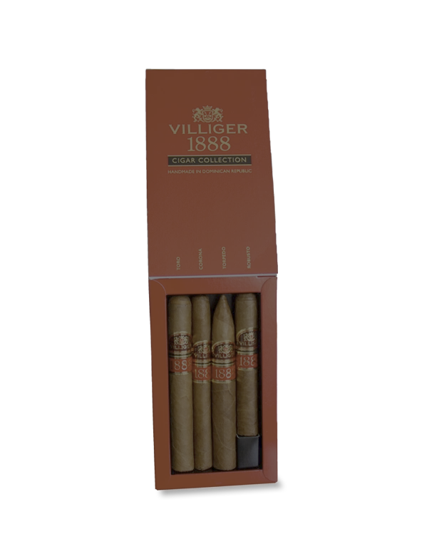
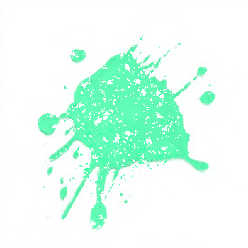
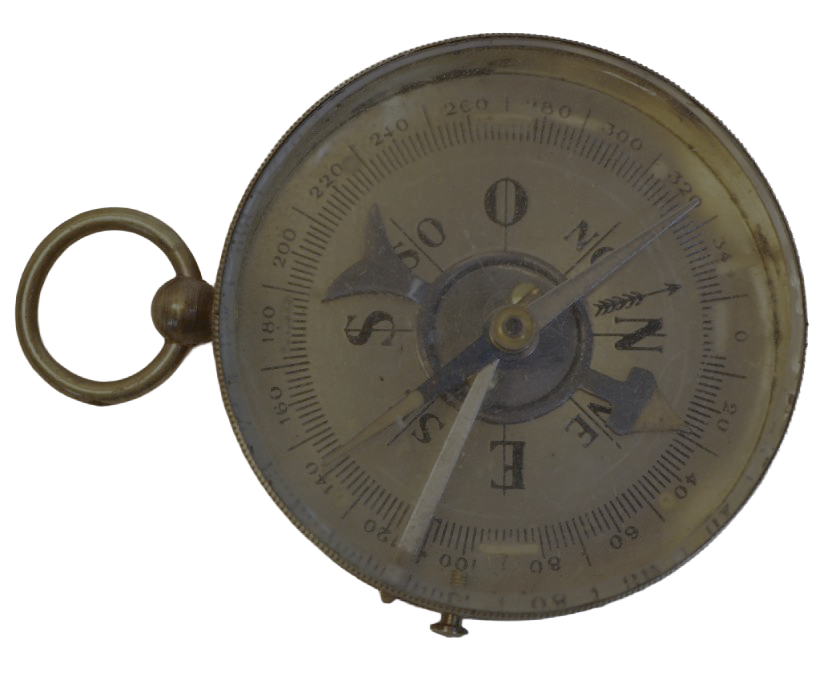
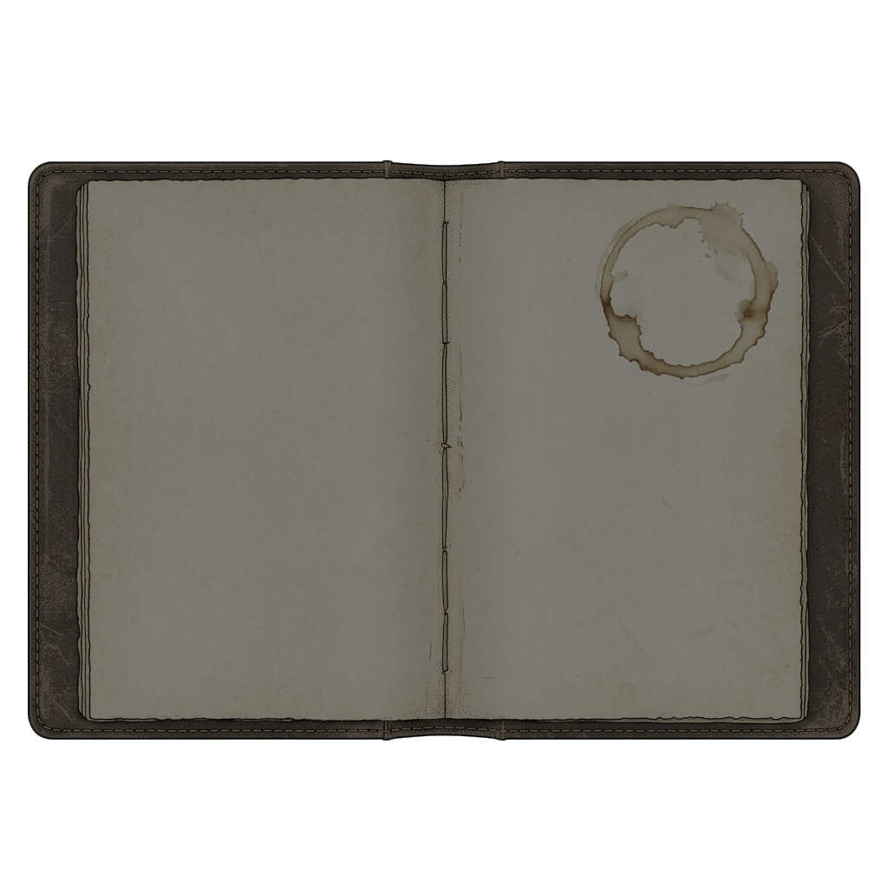
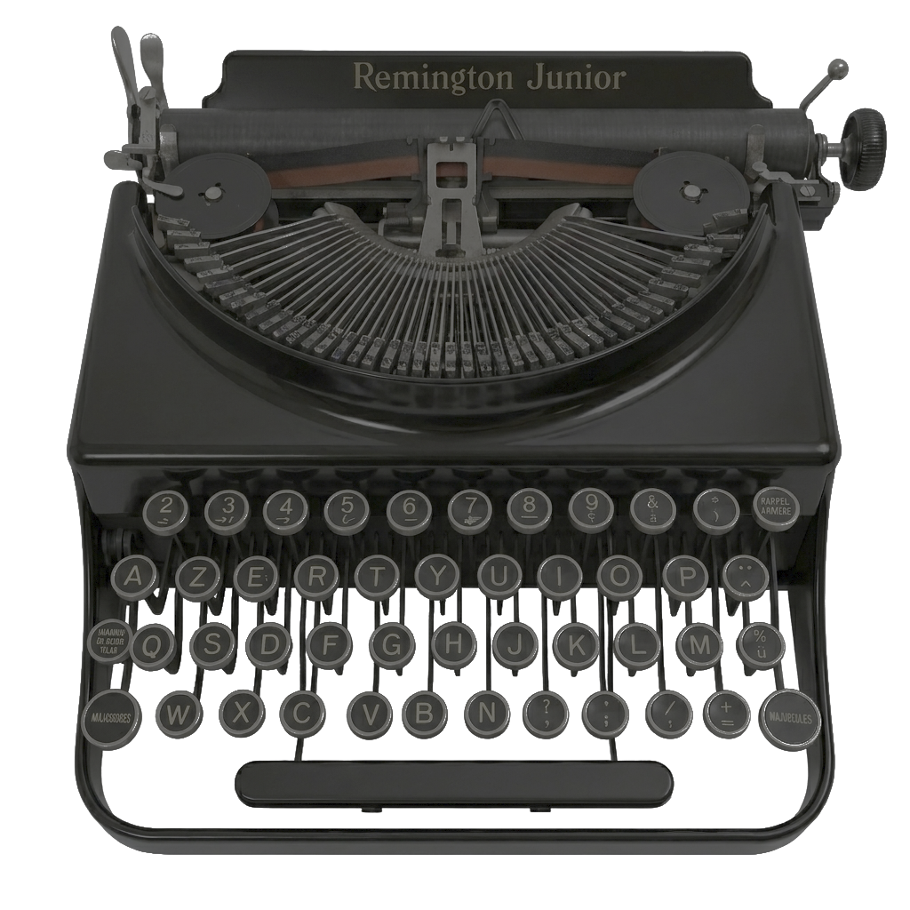
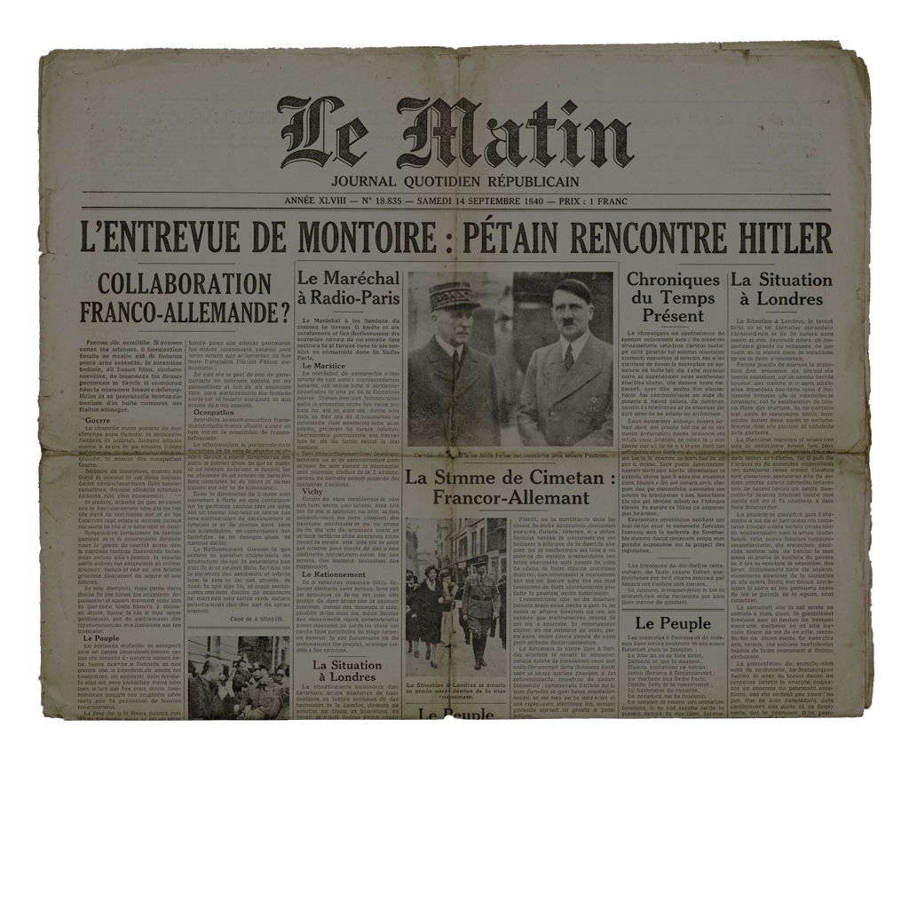
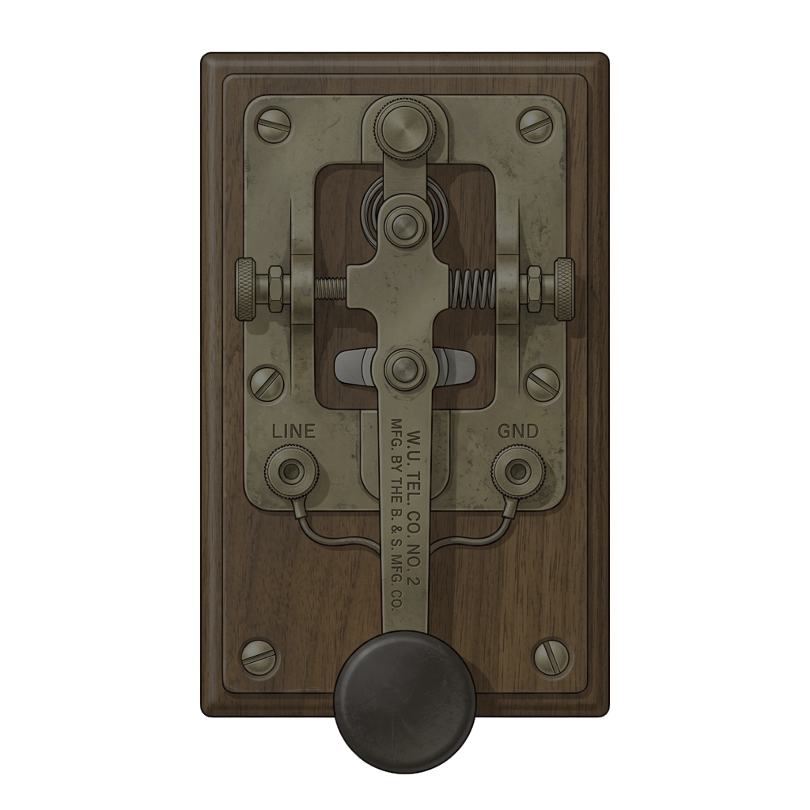
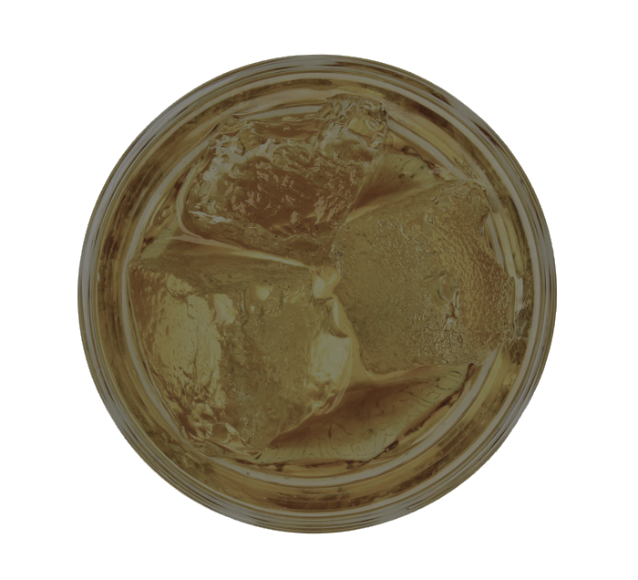

ZONE DE PARACHUTAGE IDENTIFIÉE : CUBJAC
Grâce aux recoupements de l'azimut 320° depuis Montignac, la cible de l'embuscade et du parachutage allié a été précisément géolocalisée sur la commune de Cubjac.
Éclaireurs de la Résistance, la cible est verrouillée ! Pour déclencher l'assaut et sécuriser le parachutage d'armes, vous devez immédiatement transmettre cette position en code Morse au lieutenant-colonel britannique Tommy Macpherson ("l'Écossais") de la section de liaison alliée.
Utilisez la clé télégraphique et tapez le mot CUBJAC en code Morse pour valider définitivement la réussite de l'opération.





Pour déverrouiller le décryptage des ordres secrets sur la Remington, rassemblez les trois codes clandestins de l'opération :
- L'Encre du Carnet [Clé 1]
- La Voix de la Radio [Clé 2]
- Le Verre du Cadre [Clé 3]
COMBINAISON TYPEWRITER :
Tapez les trois codes à la suite, dans l'ordre exact :
Carnet puis
Radio puis
Cadre, tout en attaché (sans espaces ni tirets) sur la Remington.






Ne cessez jamais le combat."